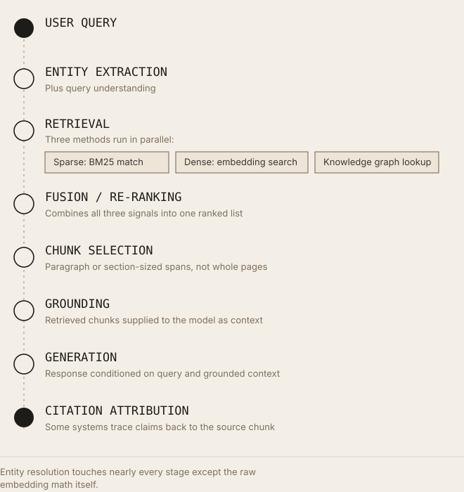

Entity Clarity Beats Keyword Density in Retrieval Scoring
Why language models reward well-defined entities over repeated phrases, and what that means for how content actually needs to be written.
Executive Summary
Traditional search ranking scored documents by counting words: how often a term appeared, how rare it was across a corpus, how close it sat to other query terms. That family of methods, TF-IDF, then BM25, treats language as strings. Modern retrieval, the kind that feeds both Google's Knowledge Graph-informed search and the RAG pipelines behind AI chat products, increasingly treats language as references to things: people, organizations, products, places. This shift did not happen because keyword matching was replaced overnight. It happened because entity resolution and semantic embeddings solve a problem keyword matching cannot: they collapse ambiguity. "Apple" the fruit and "Apple" the company are the same string and different entities. A retrieval system that can't tell them apart wastes its ranking budget on false matches. This article traces the mechanics of that shift, from probabilistic term weighting to entity linking, embeddings, and grounded generation, and states plainly where the evidence is solid and where it isn't.
Introduction
Keyword density dominated SEO for a structural reason: the ranking systems of the 1990s and 2000s were, mechanically, term-counting systems. TF-IDF scored a term by how often it appeared in a document relative to how rare it was across the collection. BM25, which followed and still underpins search engines like Elasticsearch and OpenSearch today, refined that with saturation (diminishing returns per repeated term) and length normalization. Neither method has any concept of what a word refers to. To a bag-of-words model, "jaguar" is a token with a document frequency, not a car manufacturer, an animal, or a musical instrument. Optimizing for these systems meant optimizing token frequency, because token frequency was, quite literally, the entire signal.
AI retrieval changed the input, not just the algorithm. Dense retrieval and generation systems consume meaning as vectors, and increasingly cross-reference text against structured entity data, Google's Knowledge Graph, Wikidata, DBpedia, that exists independently of any particular document's wording. This piece breaks that pipeline apart stage by stage: what an entity actually is, why keyword systems worked well enough for as long as they did, how embeddings and entity linking changed the retrieval calculus, and what a content strategist can concretely do differently, without resorting to the tactical hand-waving that "entity SEO" content often trades in.
What Is an Entity?
Entity. In information retrieval and knowledge representation, an entity is a distinct, identifiable thing, a person, organization, place, product, event, or concept, that can be referenced independently of the specific words used to describe it. An entity has an existence outside of text; a keyword does not.
Named entity. A span of text that refers to an entity with a proper name: "Marie Curie," "Tesla, Inc.," "Mount Kilimanjaro." Named Entity Recognition (NER) is the NLP task of finding these spans and classifying them by type (PERSON, ORGANIZATION, LOCATION, and so on).
Knowledge graph. A structured network of entities and the relationships between them, typically stored as subject-predicate-object triples, such as (Marie Curie, discovered, Radium). Google's Knowledge Graph, launched in 2012 under the framing "things, not strings," was described at launch as containing over 500 million objects and 3.5 billion facts and relationships between them. Wikidata and DBpedia are open, community- and Wikipedia-derived equivalents that are widely used as training and grounding sources.
Entity resolution. The process of determining that two different mentions, possibly with different surface text, refer to the same real-world entity. Google's Cloud Natural Language API documentation demonstrates this directly: analyzing a passage about author J.K. Rowling returns a single entity with salience: 0.798, while its mentions array shows the API recognized "Joanne Rowling," "Rowling," "novelist," and pen name "Robert Galbraith" as four separate surface mentions of the same underlying entity.
Entity linking. Connecting a recognized entity mention to a specific node in a knowledge base, for example, resolving the text "Paris" to the Wikidata ID for the French capital rather than Paris, Texas, or Paris Hilton. This is the mechanism that actually resolves ambiguity; NER alone only finds that a proper noun exists, not which real-world thing it names.
Disambiguation. The general term for choosing the correct referent among multiple candidates when a surface string is ambiguous. It is the problem entity linking exists to solve.
Worked example, ambiguity in practice. Consider five single-word entities with genuinely different resolutions depending on context:
- Apple → could resolve to the fruit (Wikidata Q89), the company (Wikidata Q312), or the record label (Apple Records)
- Jaguar → the animal (Panthera onca), the car manufacturer (Jaguar Cars), or the Mac OS X 10.2 codename
- Python → the snake genus, the programming language, or Monty Python
- Mercury → the planet, the element, the Roman god, or the automotive brand (discontinued 2011)
- Amazon → the river, the rainforest, or the company
A keyword-matching system treats all of these as one token each. An entity-resolving system treats each as multiple distinct nodes, and uses surrounding context, co-occurring entities, syntactic role, document-level topic signals, to pick the right one. This is not a subtle distinction; it is the entire mechanical difference between the two paradigms.
Why Keywords Mattered in Traditional SEO
TF-IDF (term frequency, inverse document frequency) scores a term's importance to a document as a function of how often it appears in that document, discounted by how commonly it appears across the whole collection. A term that's frequent in one document but rare elsewhere scores high; a term that's frequent everywhere (like "the") scores near zero regardless of raw count.
BM25 (Best Matching 25), developed from the probabilistic retrieval framework built by Stephen Robertson and Karen Spärck Jones through the 1970s to 1990s and implemented in the Okapi system at City University London, extended TF-IDF with two refinements: term-frequency saturation, so the tenth occurrence of a word contributes far less than the second, and document-length normalization, so a long document doesn't win purely by containing more words. BM25 remains, decades later, the default lexical scoring function in Elasticsearch, OpenSearch, and Lucene, and is still used as the sparse-retrieval half of many hybrid search systems.
Why density became a popular tactic: because it was legible and directly manipulable. If a term's frequency (relative to corpus frequency) drove the score, then repeating a target term more often, within limits, moved the score. This produced two decades of content advice keyed to keyword counts, LSI-keyword lists, and density percentages.
The limitation, stated precisely: these functions have no representation of meaning. BM25 cannot tell that "car," "automobile," and "vehicle" are related concepts, that "Apple" in one document means the fruit and in another means the corporation, or that a page repeating "best running shoes" fifteen times is not more relevant to a runner's actual question than a page that says it twice but correctly identifies the shoe brand, use case, and terrain. Term-frequency methods score surface form. They do not, and structurally cannot, score reference.
How Modern Retrieval Works
A production AI-answer pipeline, the kind behind RAG-based chat products and modern hybrid search engines, typically runs through the stages below. Retrieval itself forks into three methods that run in parallel and get merged back together before a chunk is ever selected.

Entity resolution touches nearly every stage except the raw embedding math itself.Embeddings. A model (commonly a Sentence-BERT-style bi-encoder, following the siamese-network architecture published by Nils Reimers and Iryna Gurevych in 2019) converts a chunk of text into a fixed-length vector such that semantically similar text produces vectors that are close together under cosine similarity. Critically, this similarity is learned from meaning, not shared vocabulary, "a physician performed surgery" and "a doctor operated on the patient" can embed close together despite sharing almost no words.
Semantic similarity / vector search. Given a query embedding, an approximate-nearest-neighbor index (HNSW, IVF, and similar structures, implemented in tools like FAISS, pgvector, and dedicated vector databases) retrieves the chunks whose embeddings are closest to it. This is the dense retrieval half of a modern hybrid system, run alongside, not instead of, a BM25-style sparse pass; production systems typically fuse both because sparse retrieval is still stronger for exact-match cases like product codes, error strings, or names it hasn't seen paired with synonyms.
Entity extraction. Named entity recognition and linking run over both the query and the candidate documents, identifying which real-world things are being discussed, independent of the specific words used.
Knowledge graphs. Where available, entity nodes carry structured facts and relationships that can be checked directly, rather than inferred from text, Google's Knowledge Graph and structured sources like Wikidata serve this role for general-knowledge entities.
Chunk retrieval. Because documents exceed what a model can process at once, retrieval operates over chunks (paragraph- or section-sized spans) rather than whole documents. A document can contain one highly relevant chunk and nine irrelevant ones; document-level scoring, the unit BM25 and PageRank were built around, doesn't capture this.
Grounding. The retrieved chunks are supplied to the generation model as context, with the expectation that the model's output will be derived from, "grounded in," that context rather than parametric memory alone.
Citation. Some systems track which retrieved chunk supported which claim in the generated output, enabling source attribution back to the original document.
Generation. The language model produces a response conditioned on the query and the grounded context.
Entity resolution touches nearly every stage of this pipeline except the embedding math itself: it disambiguates the query, it can filter or boost candidate chunks before dense retrieval even runs, and it supplies the structured facts that ground a generated answer independent of any single document's specific wording.
Why Entity Clarity Matters More Than Keyword Density
Reduced ambiguity. A document that states "Apple Inc., the Cupertino-based technology company" removes the fruit/company ambiguity at the point of parsing, rather than leaving it to be inferred from surrounding context, which a retrieval system may or may not do correctly. Compare:
- "Apple", ambiguous between the fruit, the company, the record label, and dozens of smaller referents; a system must infer intent from context, and inference can fail.
- "Apple Inc.", resolves unambiguously to a single Knowledge Graph / Wikidata node in one token span, no inference required.
- "Python", ambiguous between the language, the snake genus, and Monty Python.
- "Python programming language", resolves unambiguously; a coding-documentation context becomes explicit rather than inferred.
- "Jaguar", ambiguous between the animal and the manufacturer.
- "Jaguar Cars", resolves unambiguously to the automotive entity.
Why this changes retrieval outcomes, mechanically:
- Better retrieval confidence. Entity linkers and downstream ranking models can assign a disambiguated mention a specific knowledge-base ID with a confidence score, rather than treating the mention as an ambiguous token requiring probabilistic guessing at query time.
- Knowledge graph alignment. An unambiguous entity mention can be matched directly against a knowledge graph node, pulling in verified structured facts (founding date, industry, relationships) that a purely text-based system would have to infer or hallucinate.
- Higher semantic precision. Embedding models still encode context, but removing lexical ambiguity removes one source of noise from that encoding, the vector for "Apple Inc. reported quarterly earnings" carries less competing signal than the vector for a passage that says only "Apple" throughout.
- Improved grounding. When a generation model is given disambiguated, entity-explicit context, it has less reconstructive work to do to determine what's actually being discussed, a plausible mechanism for fewer entity-conflation errors, though it should be stated clearly that no published, controlled study isolates entity explicitness as an independent variable and measures its effect on hallucination rates. This is a reasonable inference from how the pipeline works, not an established empirical finding.
- Potentially more accurate citations. Similarly, systems that track provenance back to source chunks would plausibly attribute claims more reliably when the source chunk itself is unambiguous about which entity it describes, again, a mechanistic argument rather than a measured result. There is currently no public benchmark that isolates entity clarity as a citation-accuracy variable.
Keyword Density vs. Entity Clarity
| Dimension | Traditional SEO (TF-IDF / BM25 era) | Modern Retrieval (Embeddings + Entity Resolution) |
|---|---|---|
| Core signal | Term frequency, inverse document frequency | Semantic similarity + entity identity |
| Matching method | Exact / lexical string matching | Vector similarity + knowledge graph linking |
| Handles synonyms | No, "car" ≠ "automobile" | Yes, synonymous phrasing embeds nearby |
| Handles ambiguity | No, "Apple" is one token regardless of meaning | Yes, entity linking resolves to a specific referent |
| Authority signal | Anchor text, backlink counts | Knowledge graph relationships, entity co-occurrence, corroboration across sources |
| Unit of ranking | Whole page | Chunk (paragraph/section span) |
| Optimization lever | Repeat target term at a target density | Disambiguate entities explicitly; provide structured context |
| Gaming risk | High, keyword stuffing directly moved scores | Lower, but not zero, entity-stuffing and fabricated schema are analogous failure modes |
Neither system fully replaces the other in production. Modern hybrid retrieval architectures explicitly combine sparse (BM25-style) and dense (embedding) retrieval because they fail on different query types, sparse retrieval remains stronger for exact identifiers, codes, and rare proper nouns a dense model hasn't learned good representations for. Entity clarity is not a replacement for lexical matching; it is a layer that resolves what lexical matching cannot.
The Role of Structured Data
Schema.org markup does not directly cause better rankings or retrieval placement, no primary source from Google, Bing, OpenAI, or Anthropic makes that claim, and it should not be implied. What structured data does, verifiably, is reduce the inference burden on any system trying to identify what a page is about and what entity it represents. The evidence for exactly which platforms treat structured data as a confirmed input is covered in more depth in the site's research comparing structured data against backlinks as an AI retrieval signal.
Relevant types and what they declare explicitly rather than leaving to inference:
- Organization, legal name, alternate names, industry,
sameAslinks to Wikidata/Wikipedia/official profiles, resolving company-name ambiguity at the markup level. - Person, name, affiliations, roles,
sameAsidentity links, disambiguating people who share names. - Article, author entity, publication date,
aboutandmentionsproperties that can explicitly declare which entities the content concerns. - SoftwareApplication, explicit name, version, operating system, category, resolving naming collisions between software and other entities.
- Product, brand, SKU/GTIN identifiers, explicit disambiguation from same-named products or companies.
- FAQPage, question/answer pairs marked as discrete units, aligning naturally with chunk-based retrieval.
- LocalBusiness, geographic and category identity, disambiguating businesses with common names.
- Dataset, explicit provenance and subject-matter declarations, relevant for content cited as a data source.
Why this helps machines identify entities: Schema.org's sameAs property, in particular, is a direct entity-resolution mechanism, it lets a page assert that its subject is equivalent to a specific external knowledge-base node (a Wikidata item, a Wikipedia article), collapsing ambiguity the same way writing "Apple Inc." instead of "Apple" does, but machine-parseable rather than inferred from prose.
The necessary caveat: structured data is one signal among several a system may use, not a guaranteed ranking or retrieval factor, and it can be, and has historically been, abused (inaccurate or manipulative markup), which is precisely why no crawler treats it as authoritative on its own. Google's public documentation has consistently framed structured data as helping eligibility for specific display features and aiding content understanding, not as a direct ranking multiplier.
Practical Examples
Before (ambiguous, keyword-repetitive):
Our platform uses Python to build fast apps. Python makes it easy to build apps quickly, and developers love Python for building apps. If you want to build apps, Python is a great choice for building apps.
Problems: "Python" appears five times with no disambiguation from the snake or the comedy troupe; "apps" and "building" repeat without adding information; no entity is explicitly linked to anything a knowledge graph could resolve.
After (entity-explicit, semantically dense):
Our platform is built on the Python programming language, using the Django web framework for backend logic and FastAPI for asynchronous services. This combination lets small teams ship production APIs without the boilerplate typically associated with statically typed languages like Java or C#.
Why this is easier for retrieval systems to interpret: every technical term is a resolvable named entity (Python programming language, Django, FastAPI, Java, C#) rather than a repeated ambiguous token; the comparison to Java and C# gives an embedding model richer contrastive context; and a knowledge-graph-aware system can verify each named framework independently rather than inferring meaning from repetition.
Before:
Our company was founded by John. John has years of experience. John leads the team and John's vision drives everything we do.
After:
Our company was founded in 2019 by John Okafor, a former backend engineer at Stripe. Okafor now leads a twelve-person engineering team focused on payments infrastructure.
The second version supplies exactly the kind of disambiguating detail (founding year, prior affiliation, specific role) that both entity-linking systems and human readers need to resolve "John" into a specific, verifiable person rather than a repeated pronoun-adjacent token.
Common Mistakes
- Keyword stuffing, repeating a term past the point of adding information; measurably ineffective under BM25's saturation function and actively unhelpful for embedding quality, since repetition doesn't add semantic content.
- Ambiguous language, using bare entity names ("Apple," "Mercury," "Amazon") without qualifying context, forcing a downstream system to guess.
- Missing context, introducing an entity without establishing what kind of thing it is on first mention.
- Poor headings, headings that don't name the entity or concept they introduce, weakening the chunk-level signal retrieval systems rely on.
- No schema, leaving entity identity entirely to inference when a
sameAslink could resolve it explicitly. - No author information, omitting the Person entity, which removes a corroborating identity signal available to knowledge-graph-aware systems.
- Undefined acronyms, an acronym is a keyword; its expansion is what actually links to an entity.
Practical GEO Checklist
- Name every core entity explicitly on first mention (full company name, not a nickname or pronoun).
- Disambiguate polysemous terms immediately ("Python programming language," not "Python").
- Add
Organizationschema with asameAslink to your Wikidata and/or Wikipedia entry, if one exists. - Add
Personschema for named authors, withsameAslinks to verifiable profiles. - Use
Articleschema'saboutandmentionsproperties to declare the entities your content covers. - Write headings that name the concept or entity, not generic labels like "Overview" or "More Info."
- Keep one core idea per chunk-sized section (roughly one paragraph to a few hundred words) rather than blending topics.
- Replace pronoun chains ("it," "they," "this") with the named entity when a paragraph spans more than two sentences.
- Introduce acronyms with their full expansion on first use.
- Cross-reference related entities explicitly (state relationships, not just proximity), "X, a subsidiary of Y," rather than mentioning X and Y separately.
- Avoid keyword-density targets as a content brief metric entirely; they optimize for a signal modern retrieval barely weights.
- Use
FAQPageschema for genuine Q&A content, aligned to natural chunk boundaries. - Ensure
ProductorSoftwareApplicationentities carry explicit identifiers (SKU, version, category). - Add publication and modification dates, a factual, non-entity signal that still matters for freshness-sensitive retrieval.
- Link to canonical external sources (Wikipedia, official documentation, standards bodies) for entities you reference but don't define yourself.
- Maintain internal consistency in entity naming, don't alternate between "Acme," "Acme Corp," and "Acme Corporation" without an explicit statement they're equivalent.
- Avoid unverified structured-data claims, mismatched schema (declaring facts not supported by visible content) is a known source of trust penalties, not a shortcut.
- Write comparisons explicitly where relevant ("unlike Java, Python doesn't require explicit type declarations"), contrastive context measurably enriches embedding quality.
- Test how your content's key entities resolve using a public entity-analysis tool (for example, Google Cloud Natural Language API) to see what a machine actually extracts.
- Prioritize disambiguation on your most commercially important, most polysemous terms first, not every "the" needs entity treatment, but every ambiguous brand or product name does.
Future Outlook
Three developments are underway and worth tracking, stated with appropriate uncertainty:
Multimodal retrieval. Entity resolution is expanding beyond text, image and video embeddings increasingly get linked to the same knowledge-graph nodes as textual mentions, meaning entity clarity in captions, alt text, and structured metadata plausibly matters for cross-modal retrieval, though this is an extrapolation from current architecture trends rather than a documented, measured claim about any specific production system.
Agentic search. As AI agents perform multi-step tasks (comparing products, filling forms, executing transactions) rather than answering single queries, entity resolution becomes a prerequisite for correct action, not just correct retrieval, an agent that can't disambiguate "the Jaguar" from context risks acting on the wrong entity entirely. This is a reasonable industry trajectory rather than an established research finding, since agentic web standards (like WebMCP) are still in early origin-trial stages as of mid-2026.
Knowledge graph growth and convergence. Open knowledge bases (Wikidata, DBpedia) and proprietary ones (Google's Knowledge Graph) continue to expand in scope, and increasing interoperability between them (shared identifier schemes, sameAs linking conventions) plausibly lowers the cost of entity resolution for smaller players who can't build their own knowledge graph from scratch. This is an observed trend in tooling and standards adoption, not a specific vendor commitment. Entity authority also turns out to be the strongest single predictor of AI citation for a very different kind of entity, local businesses, a pattern covered directly in the site's research on how LLMs recommend local businesses.
Key Takeaways
- TF-IDF and BM25 score term frequency and document statistics; they have no representation of what a term refers to.
- An entity is a real-world thing; a keyword is a string. The distinction is the entire basis for the shift this article describes.
- Ambiguous terms like "Apple," "Jaguar," "Python," "Mercury," and "Amazon" can each resolve to multiple distinct entities, disambiguating context is not optional for accurate retrieval.
- Modern retrieval pipelines combine sparse (BM25-style) and dense (embedding) retrieval, plus entity linking and knowledge-graph lookups, not one method replacing another, but a layered system.
- Sentence-embedding models (following the Sentence-BERT architecture) encode meaning, not just vocabulary, enabling synonym and paraphrase matching keyword systems cannot do.
- Google's Cloud Natural Language API demonstrates entity resolution directly: it correctly links "Joanne Rowling," "Rowling," and "Robert Galbraith" as mentions of one entity.
- Schema.org's
sameAsproperty is a direct, machine-readable entity-resolution mechanism, most useful forOrganization,Person, andProducttypes. - Structured data is one signal among several, not a guaranteed ranking or retrieval factor, and no primary source claims otherwise.
- Claims about entity clarity improving grounding accuracy or citation reliability are mechanistically reasonable but not backed by a published, controlled study isolating that variable, this article states that gap explicitly rather than papering over it.
- The practical lever for content strategists is disambiguation and explicit entity naming, not keyword density targets, which optimize for a signal modern retrieval increasingly treats as secondary.
Glossary
- Entity
- A distinct, identifiable real-world thing (person, place, organization, concept) referenced by text.
- Named Entity Recognition (NER)
- The NLP task of locating and classifying entity mentions in text.
- Entity Linking
- Connecting a recognized mention to a specific node in a knowledge base.
- Disambiguation
- Choosing the correct referent for an ambiguous term.
- Knowledge Graph
- A structured network of entities and their relationships, typically stored as triples.
- TF-IDF
- Term Frequency, Inverse Document Frequency; a statistical measure of term importance to a document relative to a corpus.
- BM25
- A probabilistic ranking function extending TF-IDF with term-frequency saturation and length normalization.
- Embedding
- A fixed-length numerical vector representation of text (or other data) positioned such that semantic similarity corresponds to geometric closeness.
- Dense retrieval
- Retrieval based on embedding similarity rather than lexical term matching.
- Sparse retrieval
- Retrieval based on lexical term matching, typically via BM25 or similar.
- Grounding
- Supplying a generation model with retrieved context so its output is derived from that context.
- Salience
- A score (used by Google's Natural Language API, among others) indicating how central an entity is to a given document, on a 0 to 1 scale.
FAQ
Does this mean keyword research is obsolete?
No. Keywords still matter for understanding what people search for and how they phrase questions. What's changed is that repeating a keyword no longer substitutes for correctly identifying and disambiguating the entities that keyword refers to.
Is entity SEO a Google ranking factor?
No primary Google source states entity markup or entity clarity is a direct ranking factor. The evidence supports entity clarity as a mechanism that helps machine systems (including but not limited to Google Search) correctly interpret and match content, a different claim from "ranking factor," and this article does not conflate the two.
Do I need a knowledge graph of my own?
No. Linking to established external knowledge bases (Wikidata, Wikipedia) via sameAs is sufficient for most organizations; building a proprietary knowledge graph is a large undertaking justified only at significant scale.
Does BM25 still matter if embeddings are better?
Yes. Production hybrid systems retain BM25-style sparse retrieval because it outperforms dense retrieval on exact-match cases, product codes, rare proper nouns, and error strings a dense model may not represent well.
References
- Google, "Introducing the Knowledge Graph: things, not strings," Official Google Blog, May 16, 2012
- Google Cloud, "Method: documents.analyzeEntities," Cloud Natural Language API documentation, cloud.google.com/natural-language
- Google Cloud, "Entity and Sentiment Analysis with the Natural Language API" tutorial (J.K. Rowling / Robert Galbraith entity-resolution example)
- Robertson, S. E., and Spärck Jones, K., "Relevance Weighting of Search Terms," Journal of the American Society for Information Science, 1976
- Robertson, S., and Zaragoza, H., "The Probabilistic Relevance Framework: BM25 and Beyond," Foundations and Trends in Information Retrieval, 2009
- Reimers, N., and Gurevych, I., "Sentence-BERT: Sentence Embeddings using Siamese BERT-Networks," Proceedings of EMNLP-IJCNLP, 2019 (ACL Anthology)
- Schema.org, type documentation for Organization, Person, Article, Product, SoftwareApplication, FAQPage, LocalBusiness, Dataset
- Wikidata and DBpedia, project documentation on entity identifiers and
sameAslinking conventions